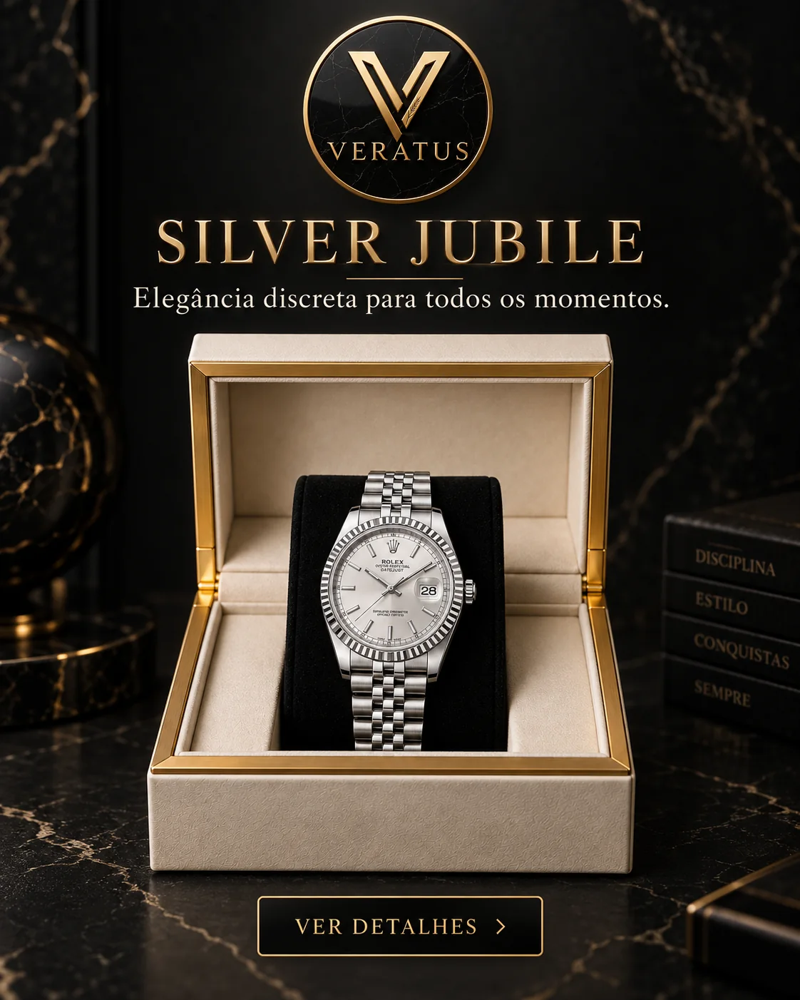
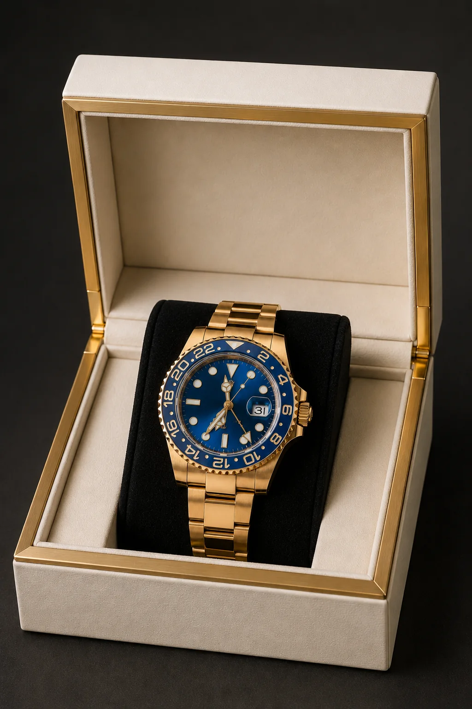
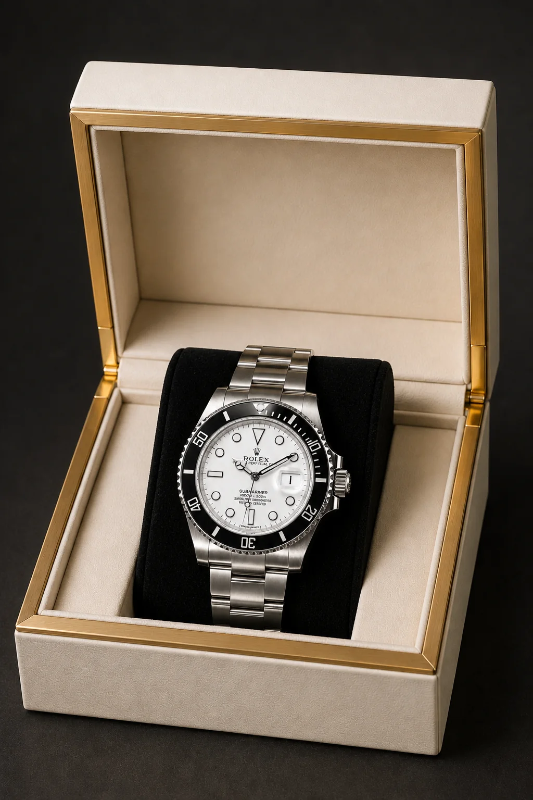
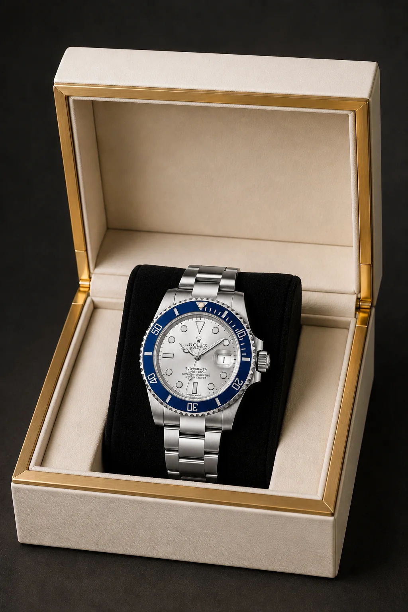
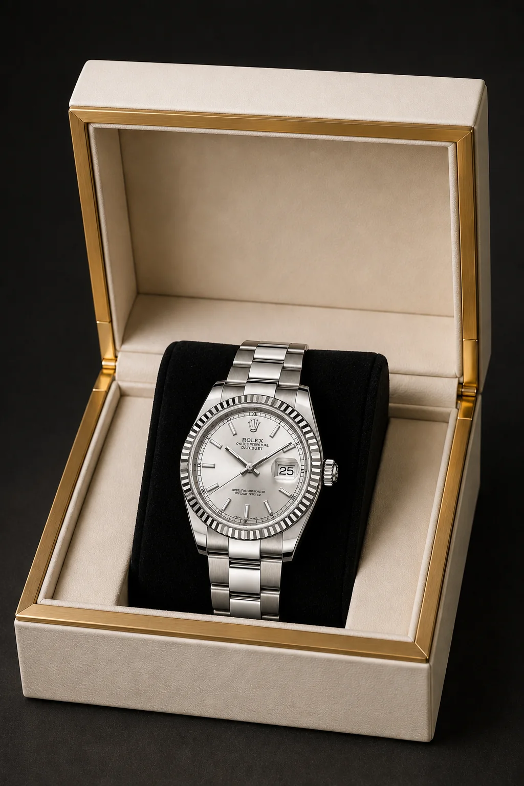
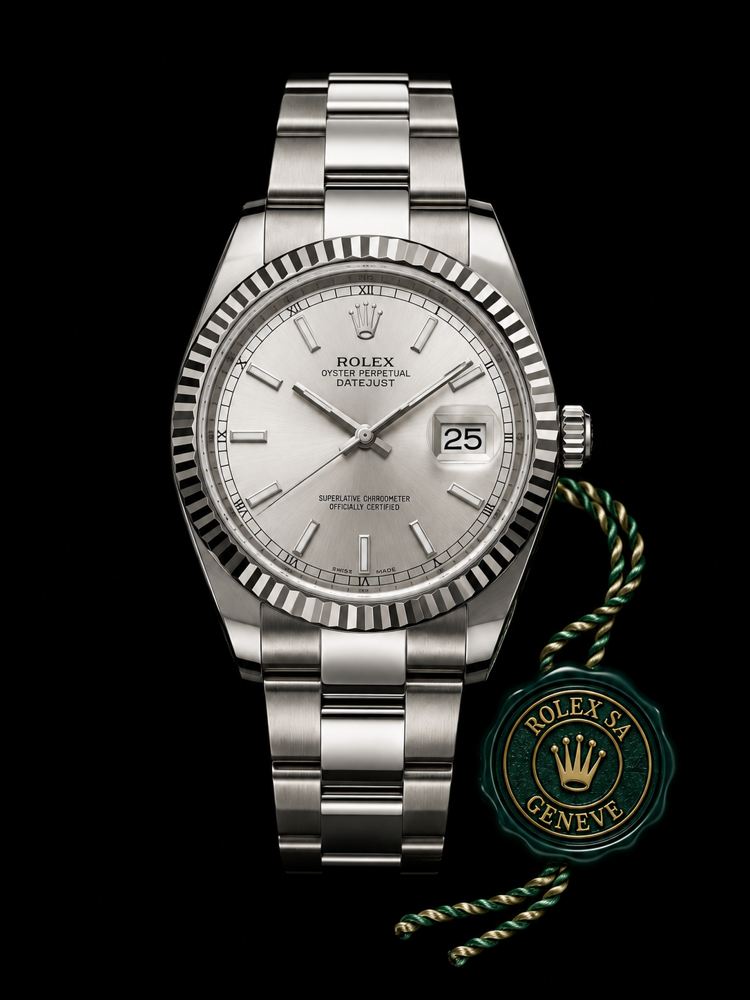
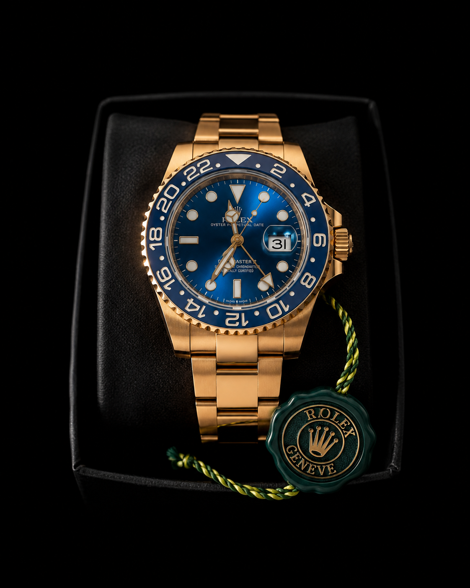
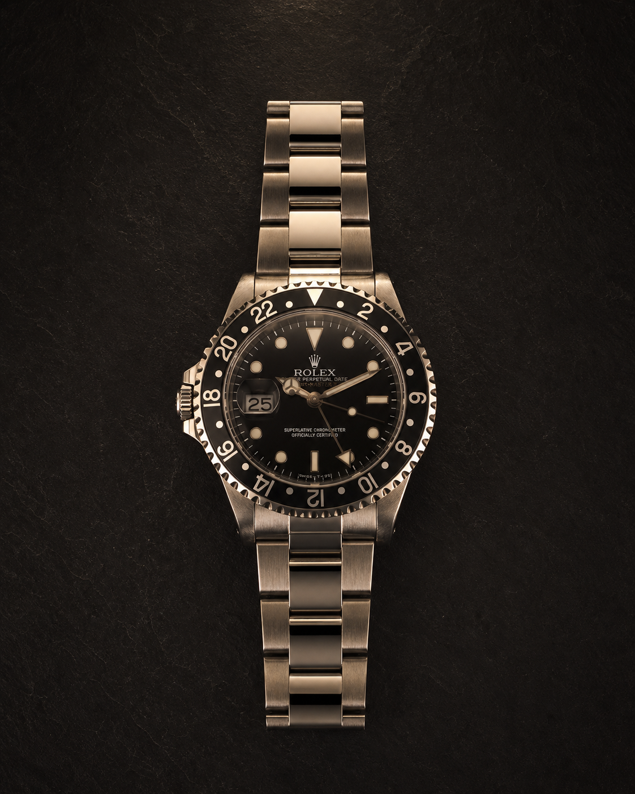
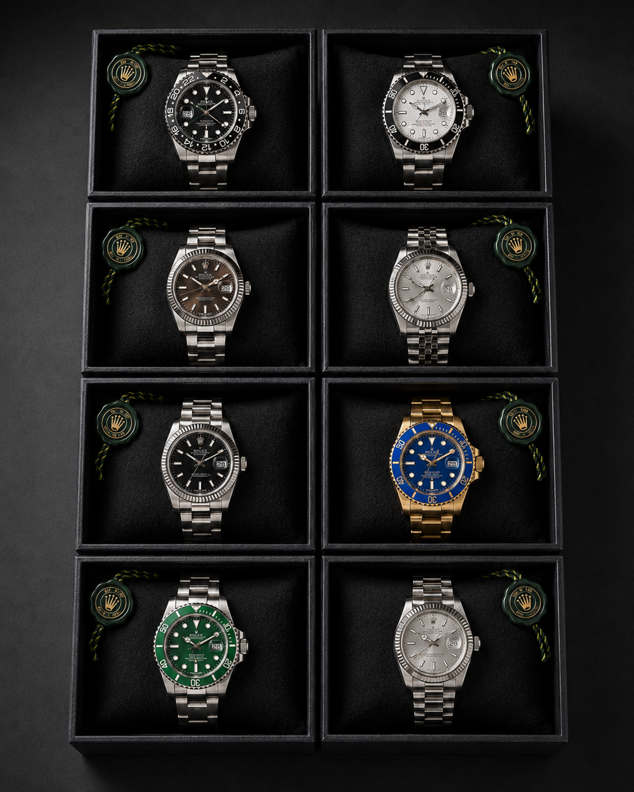
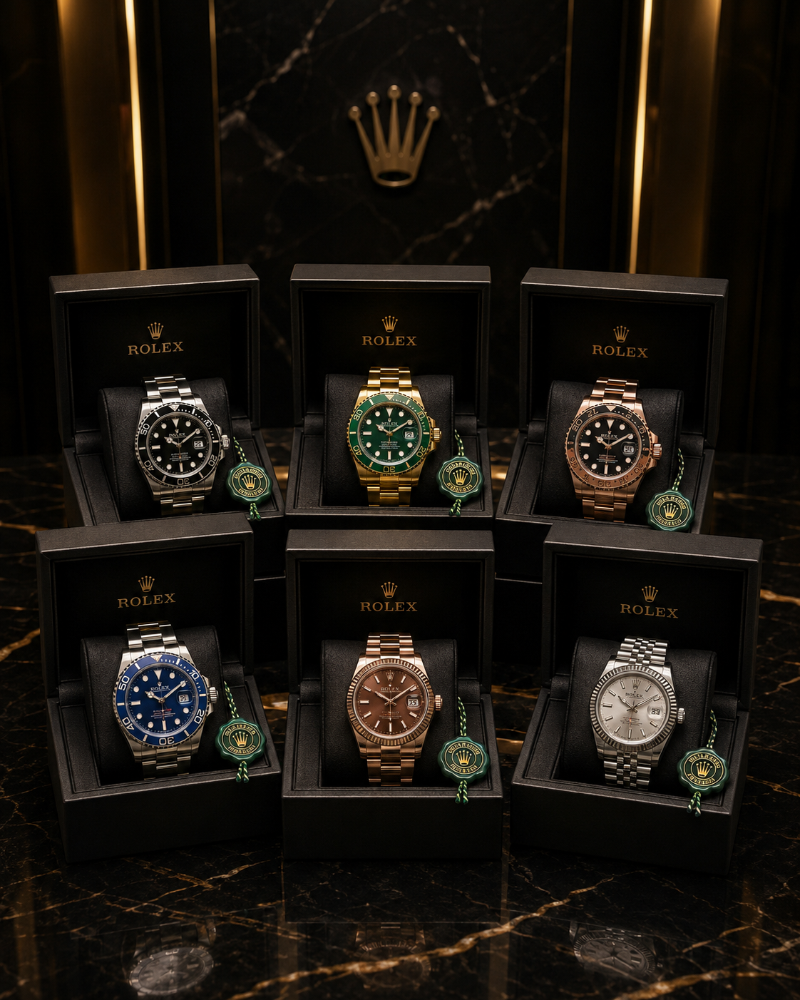

Clássico / Versátil

Mais que relógios
Relógios selecionados para acompanhar diferentes histórias, estilos e momentos.
A Veratus acredita que estilo não pertence a um único perfil, rotina ou momento.
Cada pessoa carrega sua própria história. O relógio apenas acompanha.
02 / Experiência da coleção
Escolha um ambiente. Descubra o modelo que combina com o seu momento.

01 / 04
03 / Produto protagonista
Uma seleção visual para você comparar cores, acabamentos e estilos antes de conversar com a Veratus.
Ver todos os detalhes04 / Catálogo Veratus
Organize a seleção por estilo e abra cada composição para observar seus detalhes.


05 / Arquivo da coleção









06 / Veratus
Pessoas diferentes. Rotinas diferentes. Uma forma própria de expressar quem são.
07 / Compra acompanhada
Uma seleção visual pensada para ajudar você a encontrar o estilo que combina com o seu momento.
Peça fotos, disponibilidade, valores e condições diretamente pelo WhatsApp.
Converse com uma pessoa antes de tomar sua decisão.
Seu tempo. Seu estilo.
Fale com a Veratus para consultar modelos, disponibilidade, valores e condições atuais.
Conversar no WhatsApp